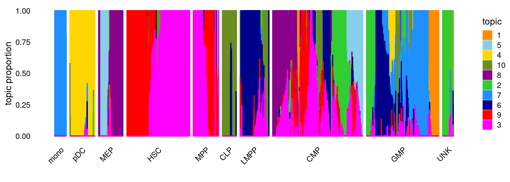
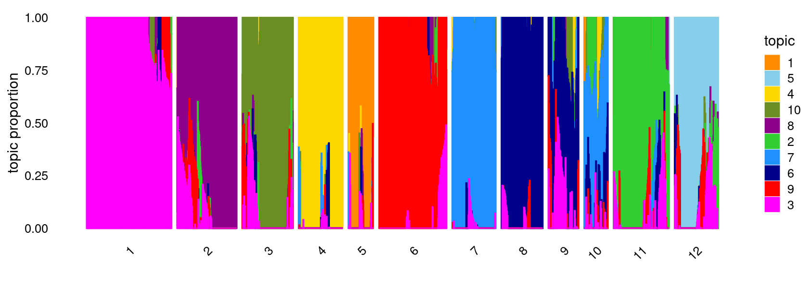
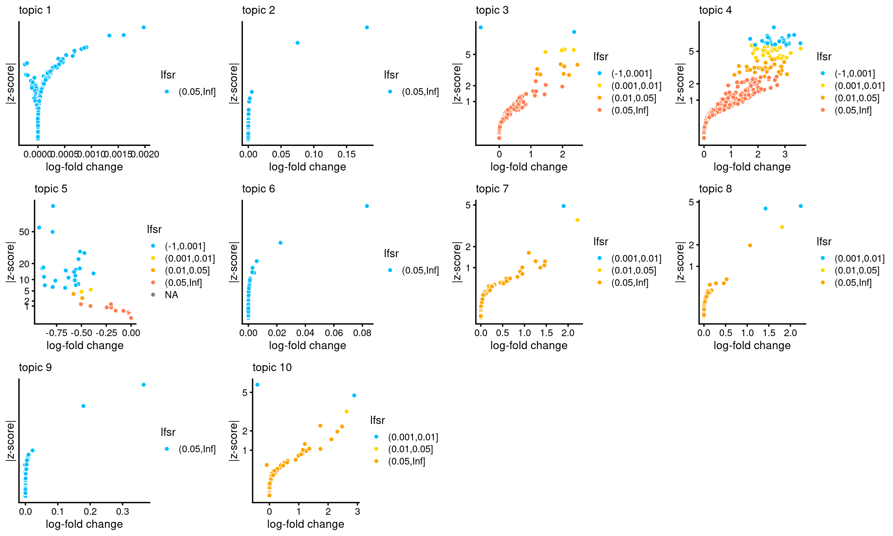
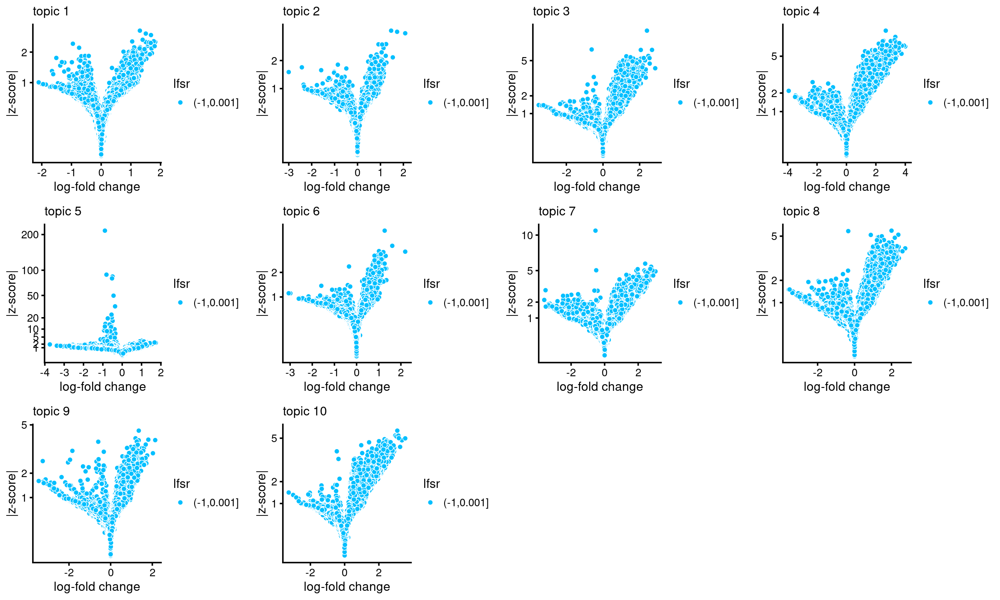

Last updated: 2022-03-11
Checks: 7 0
Knit directory: scATACseq-topics/
This reproducible R Markdown analysis was created with workflowr (version 1.7.0). The Checks tab describes the reproducibility checks that were applied when the results were created. The Past versions tab lists the development history.
Great! Since the R Markdown file has been committed to the Git repository, you know the exact version of the code that produced these results.
Great job! The global environment was empty. Objects defined in the global environment can affect the analysis in your R Markdown file in unknown ways. For reproduciblity it's best to always run the code in an empty environment.
The command set.seed(20200729) was run prior to running the code in the R Markdown file. Setting a seed ensures that any results that rely on randomness, e.g. subsampling or permutations, are reproducible.
Great job! Recording the operating system, R version, and package versions is critical for reproducibility.
Nice! There were no cached chunks for this analysis, so you can be confident that you successfully produced the results during this run.
Great job! Using relative paths to the files within your workflowr project makes it easier to run your code on other machines.
Great! You are using Git for version control. Tracking code development and connecting the code version to the results is critical for reproducibility.
The results in this page were generated with repository version 1494fcf. See the Past versions tab to see a history of the changes made to the R Markdown and HTML files.
Note that you need to be careful to ensure that all relevant files for the analysis have been committed to Git prior to generating the results (you can use wflow_publish or wflow_git_commit). workflowr only checks the R Markdown file, but you know if there are other scripts or data files that it depends on. Below is the status of the Git repository when the results were generated:
Ignored files:
Ignored: .DS_Store
Ignored: .Rhistory
Ignored: .Rproj.user/
Ignored: analysis/figure/
Untracked files:
Untracked: analysis/motif_analysis_Buenrostro2018_v2.Rmd
Untracked: output/clustering-Cusanovich2018.rds
Untracked: paper/
Untracked: scripts/postfit_Buenrostro2018_v2.sbatch
Unstaged changes:
Modified: analysis/assess_fits_Buenrostro2018_Chen2019pipeline.Rmd
Modified: analysis/clusters_Cusanovich2018_k13.Rmd
Modified: analysis/gene_analysis_Buenrostro2018_Chen2019pipeline.Rmd
Modified: analysis/gene_analysis_Cusanovich2018.Rmd
Modified: analysis/motif_analysis_Buenrostro2018_Chen2019pipeline.Rmd
Modified: analysis/motif_analysis_Cusanovich2018.Rmd
Modified: analysis/plots_Cusanovich2018.Rmd
Modified: analysis/process_data_Buenrostro2018_different_options.Rmd
Modified: scripts/postfit_Buenrostro2018_v2.sh
Note that any generated files, e.g. HTML, png, CSS, etc., are not included in this status report because it is ok for generated content to have uncommitted changes.
These are the previous versions of the repository in which changes were made to the R Markdown (analysis/structureplot_DA_Buenrostro2018_k10.Rmd) and HTML (docs/structureplot_DA_Buenrostro2018_k10.html) files. If you've configured a remote Git repository (see ?wflow_git_remote), click on the hyperlinks in the table below to view the files as they were in that past version.
| File | Version | Author | Date | Message |
|---|---|---|---|---|
| Rmd | 1494fcf | kevinlkx | 2022-03-11 | wflow_rename("analysis/analysis_Buenrostro2018_k10.Rmd", "analysis/structureplot_DA_Buenrostro2018_k10.Rmd") |
Here we explore the structure in the Buenrostro et al (2018) scATAC-seq data inferred from the multinomial topic model with \(k = 10\).
Load packages and some functions used in this analysis.
library(fastTopics)
library(Matrix)
library(dplyr)
library(ggplot2)
library(cowplot)
library(plyr)
library(dplyr)
library(RColorBrewer)
library(DT)
library(reshape)
source("code/plots.R")Data downloaded from original paper.
data.dir <- "/project2/mstephens/kevinluo/scATACseq-topics/data/Buenrostro_2018/processed_data/"
load(file.path(data.dir, "Buenrostro_2018_binarized.RData"))
cat(sprintf("%d x %d counts matrix.\n",nrow(counts),ncol(counts)))
samples$cell <- rownames(samples)
samples$label <- as.factor(samples$label)
# 2034 x 465536 counts matrix.Load the K = 10 topic model fit to the data downloaded from the original paper.
fit.dir <- "/project2/mstephens/kevinluo/scATACseq-topics/output/Buenrostro_2018/binarized/"
fit <- readRDS(file.path(fit.dir, "/fit-Buenrostro2018-binarized-scd-ex-k=10.rds"))$fit
fit <- poisson2multinom(fit)topic_colors <- c("darkorange","limegreen","magenta","gold","skyblue",
"darkblue","dodgerblue","darkmagenta","red","olivedrab")
set.seed(1)
# labels <- factor(samples$label, levels = c("HSC", "MPP", "CMP", "GMP", "mono", "MEP", "LMPP", "CLP", "pDC", "UNK"))
labels <- factor(samples$label, c("mono","pDC","MEP","HSC","MPP","CLP",
"LMPP","CMP","GMP","UNK"))
structure_plot(fit,grouping = labels,colors = topic_colors,
# topics = 1:10,
gap = 20,perplexity = 50,verbose = FALSE)
Define clusters using k-means, and then create structure plot based on the clusters from k-means.
k-means clustering (using 12 clusters) on topic proportions
set.seed(1)
clusters <- factor(kmeans(fit$L,centers = 12,iter.max = 100)$cluster)
summary(clusters)
structure_plot(fit,grouping = clusters,colors = topic_colors,
gap = 20,perplexity = 50,verbose = FALSE)
# 1 2 3 4 5 6 7 8 9 10 11 12
# 303 214 182 159 89 241 156 147 108 83 198 154DA analysis results with "ash" shrinkage (10000 MCMC iterations)
postfit_dir <- "/project2/mstephens/kevinluo/scATACseq-topics/output/Buenrostro_2018/binarized/postfit_v2/"
DA_res <- readRDS(file.path(postfit_dir, "DAanalysis-Buenrostro2018-k=10/DA_regions_topics_ash_10000iters.rds"))
summary(DA_res)
dim(DA_res$z)
# Length Class Mode
# ar 4655360 -none- numeric
# est 4655360 -none- numeric
# postmean 4655360 -none- numeric
# lower 4655360 -none- numeric
# upper 4655360 -none- numeric
# z 4655360 -none- numeric
# lfsr 4655360 -none- numeric
# lpval 1 -none- numeric
# svalue 4655360 -none- numeric
# ash 3 ash list
# F 4655360 -none- numeric
# f0 465536 -none- numeric
# [1] 465536 10Volcano plots for the regions
plots <- vector("list",10)
names(plots) <- 1:10
for (k in 1:10)
plots[[k]] <- volcano_plot(DA_res, k, labels = rep("",nrow(DA_res$z)))
do.call(plot_grid,plots)
Number of regions selected at different lfsr cutoffs:
sig_regions <- matrix(NA, nrow = 10, ncol = 5)
colnames(sig_regions) <- c("lfsr < 0.01", "lfsr < 0.05", "lfsr < 0.1", "lfsr < 0.2", "lfsr < 0.3")
rownames(sig_regions) <- paste("topic", 1:nrow(sig_regions))
for(k in 1:10){
lfsr <- DA_res$lfsr[,k]
sig_regions[k, ] <- c(length(which(lfsr < 0.01)), length(which(lfsr < 0.05)),
length(which(lfsr < 0.1)), length(which(lfsr < 0.2)),
length(which(lfsr < 0.3)))
}
sig_regions
# lfsr < 0.01 lfsr < 0.05 lfsr < 0.1 lfsr < 0.2 lfsr < 0.3
# topic 1 0 0 0 0 0
# topic 2 0 0 0 0 0
# topic 3 6 14 17 25 40
# topic 4 59 88 113 152 197
# topic 5 25 27 27 29 32
# topic 6 0 0 0 0 0
# topic 7 1 2 2 5 9
# topic 8 2 3 4 4 4
# topic 9 0 0 0 0 0
# topic 10 2 3 6 8 15DA analysis results without shrinkage (10000 MCMC iterations)
postfit_dir <- "/project2/mstephens/kevinluo/scATACseq-topics/output/Buenrostro_2018/binarized/postfit_v2/"
DA_res <- readRDS(file.path(postfit_dir, "DAanalysis-Buenrostro2018-k=10/DA_regions_topics_noshrinkage_10000iters.rds"))
summary(DA_res)
# Length Class Mode
# ar 4655360 -none- numeric
# est 4655360 -none- numeric
# postmean 4655360 -none- numeric
# lower 4655360 -none- numeric
# upper 4655360 -none- numeric
# z 4655360 -none- numeric
# lpval 4655360 -none- numeric
# svalue 1 -none- numeric
# lfsr 1 -none- numeric
# F 4655360 -none- numeric
# f0 465536 -none- numericVolcano plots for the regions
plots <- vector("list",10)
names(plots) <- 1:10
for (k in 1:10)
plots[[k]] <- volcano_plot(DA_res, k, labels = rep("",nrow(DA_res$z)))
# lfsr is not available, probably because "shrink.method" was not set to "ash"; lfsr in plot should be ignored
# lfsr is not available, probably because "shrink.method" was not set to "ash"; lfsr in plot should be ignored
# lfsr is not available, probably because "shrink.method" was not set to "ash"; lfsr in plot should be ignored
# lfsr is not available, probably because "shrink.method" was not set to "ash"; lfsr in plot should be ignored
# lfsr is not available, probably because "shrink.method" was not set to "ash"; lfsr in plot should be ignored
# lfsr is not available, probably because "shrink.method" was not set to "ash"; lfsr in plot should be ignored
# lfsr is not available, probably because "shrink.method" was not set to "ash"; lfsr in plot should be ignored
# lfsr is not available, probably because "shrink.method" was not set to "ash"; lfsr in plot should be ignored
# lfsr is not available, probably because "shrink.method" was not set to "ash"; lfsr in plot should be ignored
# lfsr is not available, probably because "shrink.method" was not set to "ash"; lfsr in plot should be ignored
do.call(plot_grid,plots)
Number of regions selected at different p-value cutoffs:
sig_regions <- matrix(NA, nrow = 10, ncol = 4)
colnames(sig_regions) <- c("p < 0.001", "p < 0.01", "p < 0.05", "p < 0.1")
rownames(sig_regions) <- paste("topic", 1:nrow(sig_regions))
for(k in 1:10){
lpval <- DA_res$lpval[,k]
pval <- 10^(-lpval)
sig_regions[k, ] <- c(length(which(pval < 0.001)), length(which(pval < 0.01)),
length(which(pval < 0.05)), length(which(pval < 0.1)))
}
sig_regions
# p < 0.001 p < 0.01 p < 0.05 p < 0.1
# topic 1 0 4 40 163
# topic 2 3 6 19 45
# topic 3 267 652 1322 1793
# topic 4 958 1889 3223 4250
# topic 5 60 114 245 416
# topic 6 2 19 73 125
# topic 7 164 537 1385 2091
# topic 8 192 776 1882 2772
# topic 9 16 76 252 418
# topic 10 127 344 790 1191
sessionInfo()
# R version 4.0.4 (2021-02-15)
# Platform: x86_64-pc-linux-gnu (64-bit)
# Running under: Scientific Linux 7.4 (Nitrogen)
#
# Matrix products: default
# BLAS/LAPACK: /software/openblas-0.3.13-el7-x86_64/lib/libopenblas_haswellp-r0.3.13.so
#
# locale:
# [1] LC_CTYPE=en_US.UTF-8 LC_NUMERIC=C
# [3] LC_TIME=en_US.UTF-8 LC_COLLATE=en_US.UTF-8
# [5] LC_MONETARY=en_US.UTF-8 LC_MESSAGES=en_US.UTF-8
# [7] LC_PAPER=en_US.UTF-8 LC_NAME=C
# [9] LC_ADDRESS=C LC_TELEPHONE=C
# [11] LC_MEASUREMENT=en_US.UTF-8 LC_IDENTIFICATION=C
#
# attached base packages:
# [1] stats graphics grDevices utils datasets methods base
#
# other attached packages:
# [1] reshape_0.8.8 DT_0.20 RColorBrewer_1.1-2 plyr_1.8.6
# [5] cowplot_1.1.1 ggplot2_3.3.5 dplyr_1.0.8 Matrix_1.4-0
# [9] fastTopics_0.6-97 workflowr_1.7.0
#
# loaded via a namespace (and not attached):
# [1] Rtsne_0.15 colorspace_2.0-3 ellipsis_0.3.2
# [4] class_7.3-20 rprojroot_2.0.2 fs_1.5.2
# [7] rstudioapi_0.13 farver_2.1.0 listenv_0.8.0
# [10] MatrixModels_0.5-0 ggrepel_0.9.1 prodlim_2019.11.13
# [13] fansi_1.0.2 lubridate_1.8.0 codetools_0.2-18
# [16] splines_4.0.4 knitr_1.37 jsonlite_1.7.3
# [19] pROC_1.18.0 mcmc_0.9-7 caret_6.0-90
# [22] ashr_2.2-47 uwot_0.1.11 compiler_4.0.4
# [25] httr_1.4.2 assertthat_0.2.1 fastmap_1.1.0
# [28] lazyeval_0.2.2 cli_3.2.0 later_1.3.0
# [31] prettyunits_1.1.1 htmltools_0.5.2 quantreg_5.86
# [34] tools_4.0.4 coda_0.19-4 gtable_0.3.0
# [37] glue_1.6.2 reshape2_1.4.4 Rcpp_1.0.8
# [40] jquerylib_0.1.4 vctrs_0.3.8 nlme_3.1-155
# [43] conquer_1.2.1 iterators_1.0.13 timeDate_3043.102
# [46] gower_0.2.2 xfun_0.29 stringr_1.4.0
# [49] globals_0.14.0 ps_1.6.0 lifecycle_1.0.1
# [52] irlba_2.3.5 future_1.23.0 getPass_0.2-2
# [55] MASS_7.3-55 scales_1.1.1 ipred_0.9-12
# [58] hms_1.1.1 promises_1.2.0.1 parallel_4.0.4
# [61] SparseM_1.81 yaml_2.2.2 pbapply_1.5-0
# [64] sass_0.4.0 rpart_4.1-15 stringi_1.7.6
# [67] SQUAREM_2021.1 highr_0.9 foreach_1.5.1
# [70] lava_1.6.10 truncnorm_1.0-8 rlang_1.0.1
# [73] pkgconfig_2.0.3 matrixStats_0.61.0 evaluate_0.14
# [76] lattice_0.20-45 invgamma_1.1 purrr_0.3.4
# [79] labeling_0.4.2 recipes_0.1.17 htmlwidgets_1.5.4
# [82] processx_3.5.2 tidyselect_1.1.2 parallelly_1.30.0
# [85] magrittr_2.0.2 R6_2.5.1 generics_0.1.2
# [88] DBI_1.1.2 pillar_1.7.0 whisker_0.4
# [91] withr_2.4.3 survival_3.2-13 mixsqp_0.3-43
# [94] nnet_7.3-17 tibble_3.1.6 future.apply_1.8.1
# [97] crayon_1.5.0 utf8_1.2.2 plotly_4.10.0
# [100] rmarkdown_2.11 progress_1.2.2 grid_4.0.4
# [103] data.table_1.14.2 callr_3.7.0 git2r_0.29.0
# [106] ModelMetrics_1.2.2.2 digest_0.6.29 tidyr_1.1.4
# [109] httpuv_1.6.5 MCMCpack_1.6-0 RcppParallel_5.1.5
# [112] stats4_4.0.4 munsell_0.5.0 viridisLite_0.4.0
# [115] bslib_0.3.1 quadprog_1.5-8